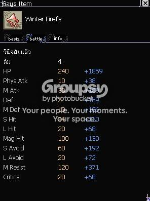
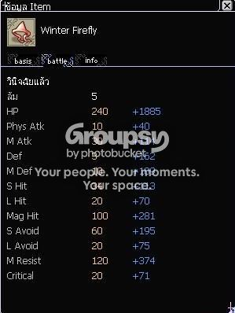

เหมียว เหมียว เหมียว รวมพลคนรักแมว
 โดย ECO » อังคาร 18 พ.ย. 2008 12:11 am
โดย ECO » อังคาร 18 พ.ย. 2008 12:11 am
Shiika เขียน:Shiika เขียน:Shiika เขียน:ขอ note ไว้หน่อย แมวตัวเอง
แมวล้ม 2 matk 30+98 (max +98 ) rcv 206% แมวฮีลตัวเองได้ 630
จับไปล้มรอบที่ 3 ละ อีกสักเดือนคงได้เทส matk
มาแจ้งข่าว
ตอนนี้แมวล้ม 3 matk 30+98 (max +103) rcv 209% แต่แมวฮีลตัวเองได้แค่ 618 :?
อะไรของมันฟะ ฝึกก็ยาก ดันล้มแล้วฮีลเบาลงอีก
http://i293.photobucket.com/albums/mm50 ... 092929.jpg
อะ อันนี้เต็มละ matk 30+103 rcv 209% แมวฮีลตัวเองได้ 639
ึ

ล้ม 4 matk 30+109 rcv 212% แมวฮีลตัวเองได้ 648
สิ้นหวัง :yoyo106:
- ECO
- Dark Warrior

- โพสต์: 276285
- ลงทะเบียนเมื่อ: พุธ 26 ต.ค. 2011 9:31 pm


 โดย ECO » อังคาร 09 ธ.ค. 2008 10:25 pm
โดย ECO » อังคาร 09 ธ.ค. 2008 10:25 pm

หึหึ
ข้าพเจ้าอ่านประวัติแมวผี เริ่มอยากจะขายแมวผีน้อยๆ ของข้าพเจ้าทิ้งเสียละ
ชอบ โซระ กับ อาคาเนะ และก็ ไอ นะครับ ^ ^
น่ารักดี
(โซระ นี้ ชื่อเหมือน โซระ อาโออิ เลยงะ)
*ทำไหมทำเควสเนโกะโมโมะ ไม่ได้ละหว่า ทั้งๆ ที่เป็นตัวใหม่ ก็แค่พกเนโกะโมโมะจากตัวเก่าไปไหนมาไหนด้วย พอจะทำตัวใหม่ ทำไม่ได้เฉยเลย = =
- ECO
- Dark Warrior
- โพสต์: 276285
- ลงทะเบียนเมื่อ: พุธ 26 ต.ค. 2011 9:31 pm


 โดย ECO » พุธ 24 ธ.ค. 2008 5:10 pm
โดย ECO » พุธ 24 ธ.ค. 2008 5:10 pm
Shiika เขียน:Shiika เขียน:Shiika เขียน:Shiika เขียน:ขอ note ไว้หน่อย แมวตัวเอง
แมวล้ม 2 matk 30+98 (max +98 ) rcv 206% แมวฮีลตัวเองได้ 630
จับไปล้มรอบที่ 3 ละ อีกสักเดือนคงได้เทส matk
ตอนนี้แมวล้ม 3 matk 30+98 (max +103) rcv 209% แต่แมวฮีลตัวเองได้แค่ 618 :?
อะไรของมันฟะ ฝึกก็ยาก ดันล้มแล้วฮีลเบาลงอีก
http://i293.photobucket.com/albums/mm50 ... 092929.jpg
อะ อันนี้เต็มละ matk 30+103 rcv 209% แมวฮีลตัวเองได้ 639
ึ
http://i293.photobucket.com/albums/mm50 ... neko04.jpg
ล้ม 4 matk 30+109 rcv 212% แมวฮีลตัวเองได้ 648


ล้ม 5 rcv 215% แมวฮีลตัวเองได้ 657
เพิ่มรอบละ 9 หน่วยแน่ะ

- ECO
- Dark Warrior
- โพสต์: 276285
- ลงทะเบียนเมื่อ: พุธ 26 ต.ค. 2011 9:31 pm
 โดย ECO » ศุกร์ 26 ธ.ค. 2008 11:32 pm
โดย ECO » ศุกร์ 26 ธ.ค. 2008 11:32 pm
SnOt เขียน:จากที่ลองดูแล้ว รู้สึกว่าการพกแมวไปด้วย แล้วกดใช้สกิลฆ่ามอนไปเรื่อยๆ
ไม่ต้องเป็นบรีดเดอร์ พวกค่า
mag hit / m.atk และค่าร่ายเร็ว
มันขึ้นไวดีกว่า สั่ง go เรื่อยๆ หรือว่าเรากดไม่เป็นหว่า
ถูกต้องครับ ถ้าพกแมวไปเก็บเลเวล ค่า mag hit / m.atk และค่าร่ายเร็ว จะขึ้นได้ดีกว่า
เพราะ โอกาศในการอัพสเตตัส mag hit / m.atk และค่าร่ายเร็ว ของแมวจะมีสูงขึ้น
สาเหตุน่าจะมาจาก
1 แมวไม่ต้องมาอัพ สเตตัสทางสายโจมตี
2 เหมือนกับบังคับ ไห้แมวออกสกิลไปในตัว
ผมคิดว่าใจจริงมันคงอยากสู้กับเราด้วยแหล่ะ แต่ถ้าเราไม่สั่ง Go มันก็ไม่ไป มันเลย ส่งสกิลไห้แทน
และออกสกิลบ่อยกว่าไห้แมวเก็บเองเพียวๆ ลองเปลี่ยนเป็น บรีดเด้อ แล้วลองเก็บเลเวลแบบอาชีพหลักดูแล้วจะรู้
- ECO
- Dark Warrior
- โพสต์: 276285
- ลงทะเบียนเมื่อ: พุธ 26 ต.ค. 2011 9:31 pm
ผู้ใช้งานขณะนี้
่กำลังดูบอร์ดนี้: ไม่มีสมาชิก และ บุคคลทั่วไป 1 ท่าน